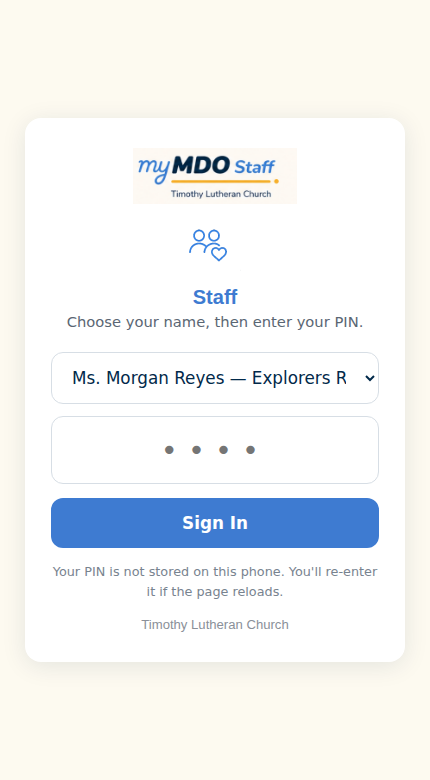
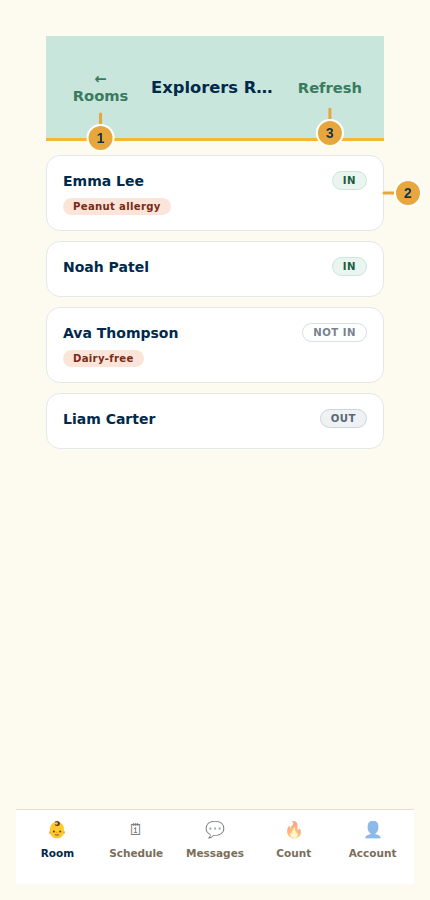
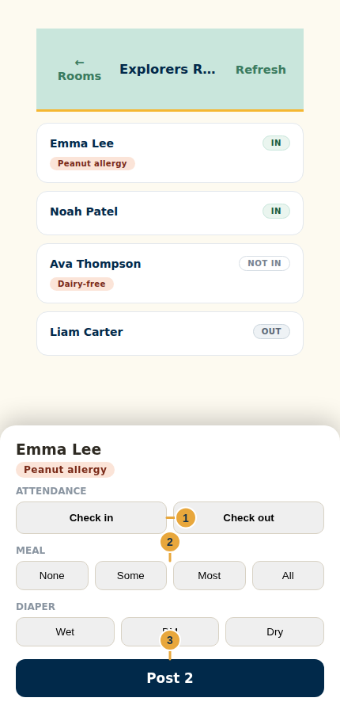
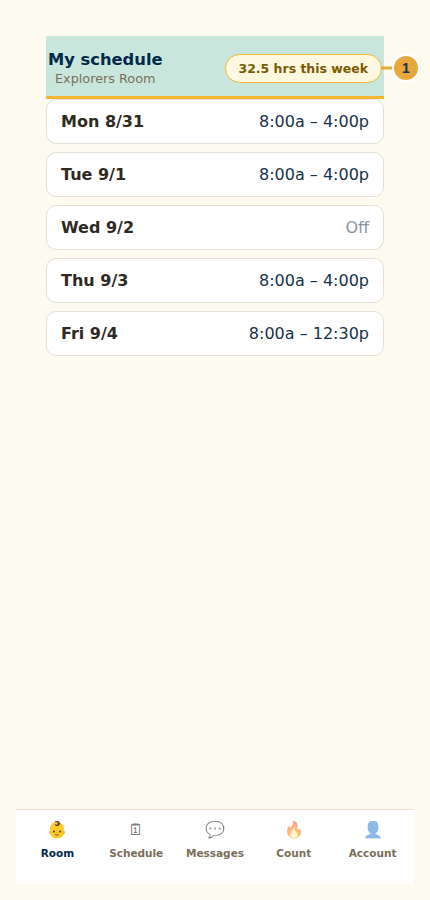
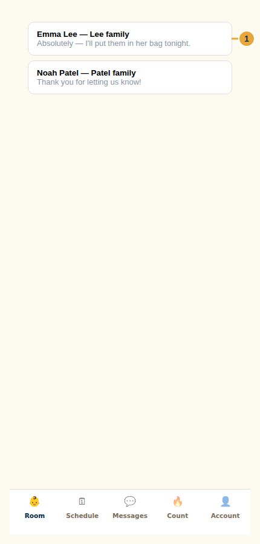
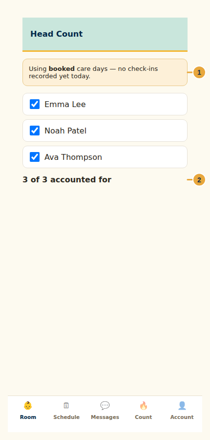

Staff
Staff
Staff Guide
Room roster, daily logging, your schedule, messages, and head count
September 2026 · v1
mdo.timothystl.org/staff.html
Timothy Lutheran Church — Mother's Day Out
6704 Fyler Ave, St. Louis, MO 63139 · (314) 781-8673 · mdo@timothystl.org
Start here
The staff app has five tabs: Room, Schedule, Messages, Count (head count), and Account. Room is where you'll spend most of your day — it's the roster for whichever room you're clocked into, and the quick-log sheet you use to record each child's day.
Sign in and choose your room

- Choose your name from the dropdown — identity comes before the PIN, so a guessed PIN alone can't get in.
- Enter your PIN and tap Sign In.
- On the room picker, tap the room you're working in today. You can switch rooms later with ← Rooms at the top of the roster.
Your room roster

- ← Rooms takes you back to switch to a different room.
- Each child's card shows their name, current status (In, Out, or Not in), and any allergy or dietary chip on file. Tap a card to open the quick-log sheet for that child.
- Refresh pulls the latest roster — useful right after a child is dropped off in another room and moved, or after another teacher logs an event.
Logging a child's day

- Tap a child's card on the roster to open their quick-log sheet. Any allergy note appears at the top — always read it before a snack or meal.
- Tap Check in when the child physically arrives, and Check out when a parent or approved contact picks them up. This is the official arrival/departure record — it's what the parent app's Today tab reads.
- Tap the buttons for what happened — meal amount, diaper change, nap start/end, or a supplies request. You can tap more than one before posting.
- Tap Post to save. The button shows a count of what's queued so you can review before it goes out.
My schedule and time off

- Open Schedule to see your shifts for the current week — start and end times, or "Off" for a day you're not scheduled.
- This shows only your own hours. Other teachers' schedules, pay, and time off aren't visible here.
- To request a day off, use the Ask for a day off flow — see the Clock In/Out Guide, since that request is submitted from the clock-in app. It's sent to the director for approval and your schedule doesn't change until she responds.
Messages with families

- Open Messages to see threads from families whose child is on your room's roster today — you won't see another room's messages.
- Tap a thread to read it and reply. Keep replies focused on the child and the day — for anything about billing, enrollment, or a policy question, point the family to the office.
Head count (fire drills & emergencies)

- Open Count during a fire drill or any evacuation.
- Read the banner at the top — it tells you whether the count is built from today's check-ins or from booked care days (used as a fallback if no check-ins have been recorded yet that day).
- Check off each child as you physically account for them outside.
Incident reports & missing child alerts
Filing an incident report (a fall, a scrape, a bite, or anything similar) is done from the sheet the app opens for that situation — fill in what happened, where, what was done, and who else saw it. Filing the report is your signature; the parent signs on your phone at pickup, and the director signs last before the family can read the full report in their portal.
If a child cannot be found, use the missing-child alert. It pushes a banner to every staff phone in the building at once — there's no "send to one person" option, on purpose. Every available adult should stop and help search immediately.
Staff quick reference
| I need to… | Go to | Best action |
|---|---|---|
| Log a meal, diaper, or nap | Room | Tap the child, tap the events, then Post |
| Record arrival/departure | Room → child sheet | Tap Check in / Check out |
| See my own shifts | Schedule | Review this week's hours |
| Reply to a family | Messages | Open the thread and reply |
| Run a fire-drill count | Count | Check off each child as accounted for |
| File an incident report | Room → child sheet | Fill in what happened and sign by filing |
| Report a missing child | Missing child alert | Send immediately — it reaches every staff phone |
Timothy Lutheran Mother's Day Out
Office: (314) 781-8673 · Email: mdo@timothystl.org
Staff App: mdo.timothystl.org/staff.html